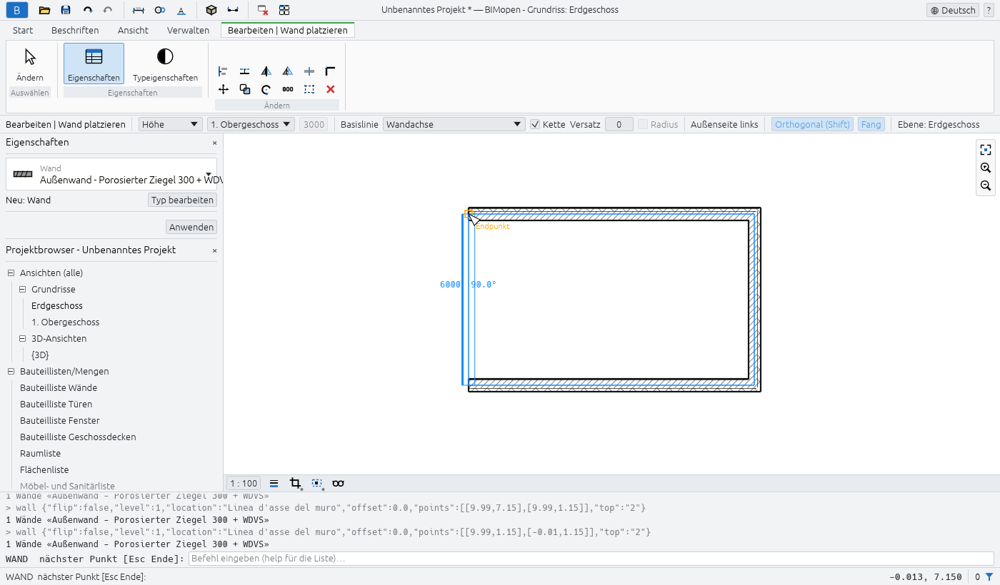
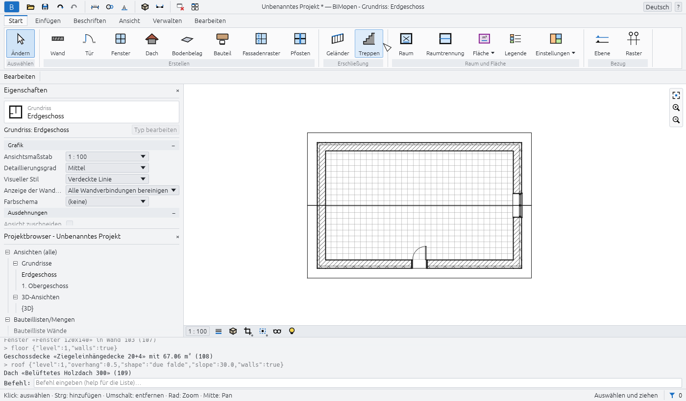
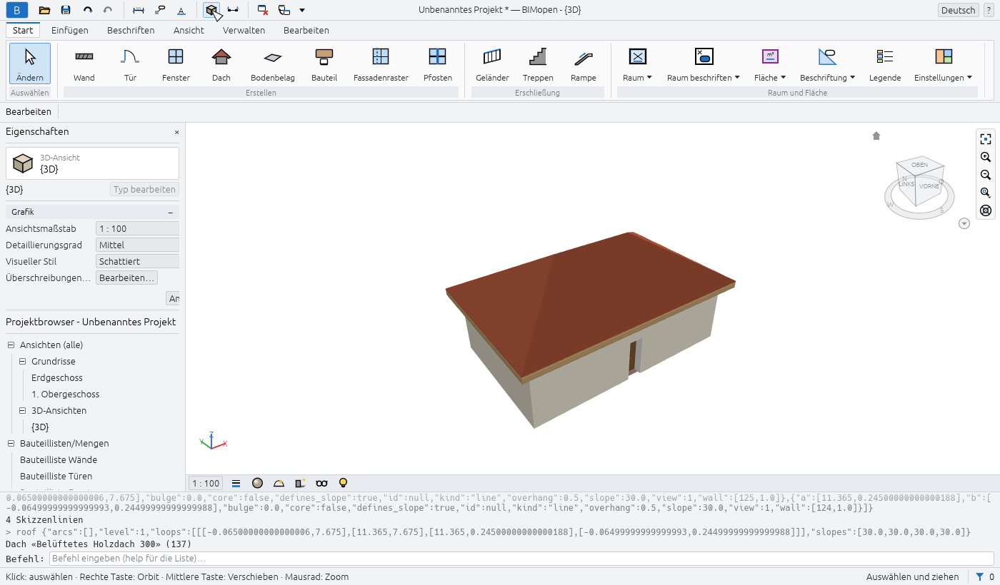
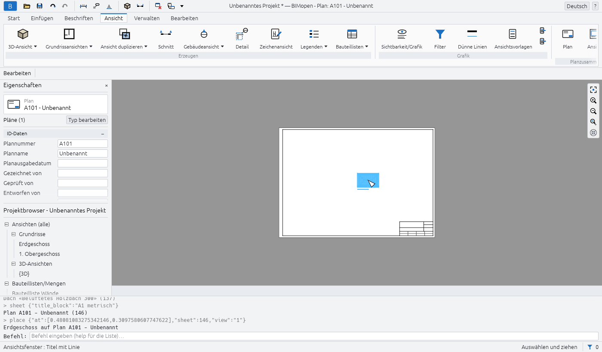

Erste Schritte
Dieses Kapitel zeigt, wie Sie BIMopen auf dem Desktop und im Browser starten, was das Beispielprojekt enthält und wie Sie ein erstes kleines Haus modellieren: vier Wände, eine Tür, ein Fenster, eine Geschossdecke, ein Dach, eine 3D-Ansicht und einen Plan mit dem Grundriss darauf. Es dauert etwa zehn Minuten.
BIMopen auf dem Desktop ausführen
BIMopen wird mit Rust ab Version 1.90 aus dem Quellcode erstellt. Unter Linux benötigt die grafische Oberfläche außerdem die Entwicklungsdateien von xkbcommon, Wayland und GTK 3.
sudo apt-get install -y libxkbcommon-dev libwayland-dev libgtk-3-dev # Debian, Ubuntu
cargo run --release -p bimopen -- --sample # opens the sample house
Das Programm heißt bimopen. Es akzeptiert eine zu öffnende Datei und eine Option:
| Befehl | Was es öffnet |
|---|---|
bimopen |
Ein neues, leeres Projekt |
bimopen --sample |
Das Beispielhaus |
bimopen house.bimopen |
Das in house.bimopen gespeicherte Projekt |
Sie können ein Projekt auch öffnen, indem Sie eine .bimopen-Datei aus dem Dateimanager in das
Fenster ziehen.
Sprache und Design
Beim ersten Start verwendet BIMopen die Sprache des Betriebssystems, sofern es eine seiner sechs Sprachen ist (Italienisch, Englisch, Deutsch, Französisch, Spanisch, Arabisch), und andernfalls Englisch. Zum Ändern verwenden Sie das Sprachmenü am rechten Ende der Titelleiste (die Weltkugel mit dem Namen der Sprache) oder Anwendungsmenü ▸ Optionen ▸ Sprache. Die Benutzeroberfläche wechselt sofort.
In Optionen wählen Sie außerdem das Design, Hell oder Dunkel, und ob der Hintergrund der Ansichten umgekehrt wird (Hintergrundfarbe umkehren: dunkle Ansichten mit hellen Linien). Die Wahl des dunklen Designs kehrt auch den Hintergrund um; Sie können dies wieder ausschalten. BIMopen merkt sich Sprache und Design für den nächsten Start.
BIMopen im Browser ausführen
Die Webversion ist dasselbe Programm, für den Browser kompiliert. Öffnen Sie atsanna.github.io/bimopen-site/app/: Sie startet mit dem Beispielhaus. Es muss nichts installiert werden, und das Projekt bleibt in Ihrem Browser: Es wird nirgendwohin gesendet.
Die Adresse akzeptiert diese Optionen, die sich mit & kombinieren lassen:
| Adresse | Wirkung |
|---|---|
app/?lang=de |
Öffnet für diesen Besuch auf Deutsch (it, en, de, fr, es, ar) |
app/?empty |
Startet mit einem neuen, leeren Projekt statt mit dem Beispiel |
app/?webgl |
Zeichnet mit WebGL2, auch wo WebGPU verfügbar ist |
Der Browser muss WebGPU oder WebGL2 unterstützen. Im Browser funktionieren manche Dinge anders:
- Öffnen… kann keinen Dateidialog anzeigen: Ziehen Sie eine
.bimopen-Datei in die Seite, um sie zu öffnen; - Speichern und die Exporte laden die Datei mit dem Namen des Projekts herunter.
So erstellen Sie die Webversion selbst:
cargo xtask web # builds dist/web
python3 -m http.server 8080 -d dist/web # then open http://localhost:8080
cargo xtask web benötigt das Rust-Ziel wasm32-unknown-unknown und den Befehl wasm-bindgen in
der in Cargo.lock angegebenen Version; ist wasm-opt von binaryen installiert, wird das Ergebnis
kleiner.
Das Beispielprojekt
Das Beispielhaus zeigt das meiste von dem, was BIMopen kann. Öffnen Sie es mit Anwendungsmenü ▸
Beispielprojekt, mit bimopen --sample oder durch Eingabe von sample in der Befehlszeile.

Es enthält:
- zwei Ebenen, jede mit ihrem Grundriss, und fünf Rasterlinien;
- fünfzehn Wände in vier Typen, mit Schichten, an den Ecken verbunden;
- sechs Türen und zwölf Fenster, in den Grundrissen beschriftet;
- zwei Geschossdecken, ein geneigtes Dach, eine Treppe mit ihren Geländern und eine Ladenfront-Vorhangfassade;
- Möbel und Sanitärobjekte, acht nach Nutzung eingefärbte Räume mit einer Legende;
- einen Schnitt, eine Ansicht, einen Flächenplan, eine gespeicherte 3D-Ansicht und eine Zeichenansicht mit einem Wanddetail;
- Bemaßungen, Textnotizen und die Bauteillisten von Wänden, Türen, Fenstern, Räumen und Materialien.
Tip
Das Beispiel eignet sich gut, um ein Werkzeug auszuprobieren, bevor Sie es in Ihrem eigenen Projekt verwenden: Ein neues Beispiel ist immer nur einen Klick entfernt, und nichts, was Sie daran ändern, wird gespeichert, solange Sie es nicht speichern.
Ihr erstes Haus
Die folgenden Schritte beginnen mit einem leeren Projekt und enden mit einem Plan. Jeder Schritt nennt die Schaltfläche, auf die Sie klicken; das Kapitel zur Benutzeroberfläche erklärt jeden Teil des Fensters.
1. Ein neues Projekt beginnen
- Klicken Sie auf die blaue Schaltfläche B am linken Ende der Titelleiste: Das Anwendungsmenü öffnet sich.
- Klicken Sie auf Neu ▸ Projekt…. Das Dialogfeld Neues Projekt schlägt die Standardvorlage von BIMopen vor: Klicken Sie auf OK.
Das neue Projekt hat zwei Ebenen, Erdgeschoss und 1. Obergeschoss, für jede einen Grundriss und die Standard-3D-Ansicht. Es hat noch keine Wände. Seine Wand-, Tür-, Fenster-, Geschossdecken- und Dachtypen sind einsatzbereit.
2. Den Grundriss des Erdgeschosses öffnen
Doppelklicken Sie im Projektbrowser unter Ansichten (alle) ▸ Grundrisse auf Erdgeschoss. Der Grundriss öffnet sich im Zeichenbereich, und die Titelleiste zeigt Grundriss: Erdgeschoss.
Note
Ein einfacher Klick auf eine Ansicht im Projektbrowser zeigt ihre Eigenschaften in der Palette Eigenschaften, ohne sie zu öffnen. Ein Doppelklick öffnet sie.
3. Vier Wände zeichnen
- Klicken Sie auf Start ▸ Erstellen ▸ Wand. Die Multifunktionsleiste wechselt zur kontextabhängigen Registerkarte Bearbeiten | Wand platzieren, die Optionsleiste zeigt die Einstellungen der Wand, und Eigenschaften zeigt den Typ der nächsten Wand, Außenwand - Porosierter Ziegel 300 + WDVS.
- Schalten Sie in der Optionsleiste Orthogonal (Shift) ein: Die Wände bleiben waagerecht oder senkrecht.
- Klicken Sie im Grundriss dorthin, wo die erste Ecke liegen soll. Die Befehlszeile fragt nach dem
nächsten Punkt:
WALL next point [Esc to finish]:. - Klicken Sie auf die zweite, dritte und vierte Ecke. Während Sie die Maus bewegen, werden Länge und Winkel der gerade gezeichneten Wand daneben angezeigt.
- Klicken Sie erneut auf die erste Ecke: Die vier Wände werden an den Ecken verbunden.
- Drücken Sie Esc, um die Kette zu beenden, und erneut Esc, um das Werkzeug zu beenden.

Tip
Sie können dieselben Wände auch zeichnen, indem Sie ihre Ecken in Metern eingeben:
wall 0,0 10,0 10,6 0,6 c. Das abschließende c schließt die Kette. Siehe
Befehlszeile und MCP.
4. Eine Tür und ein Fenster hinzufügen
- Klicken Sie auf Start ▸ Erstellen ▸ Tür und dann auf eine Wand, wo die Tür hin soll. Die Tür
wird in die Wand gesetzt, die um sie herum ausgeschnitten wird. Die Befehlszeile bestätigt es:
Door «Single swing door 80x210» in wall …. - Drücken Sie Esc: Das Werkzeug endet, und die Multifunktionsleiste kehrt zur Registerkarte Start zurück.
- Klicken Sie auf Start ▸ Erstellen ▸ Fenster, klicken Sie auf eine andere Wand und drücken Sie Esc.
Eine Tür oder ein Fenster kann nur in eine Wand gesetzt werden: Nach einem Klick abseits der Wände
antwortet die Befehlszeile no wall at that point, und es wird nichts platziert.
5. Eine Geschossdecke und ein Dach hinzufügen
- Klicken Sie auf Start ▸ Erstellen ▸ Bodenbelag. Der Skizzenmodus öffnet sich: die kontextabhängige Registerkarte Bearbeiten | Geschossdecken-Begrenzung erstellen, mit Wände auswählen aktiv.
- Bewegen Sie den Cursor über eine Wand und drücken Sie Tab: die vier Wände werden hervorgehoben. Klicken Sie: ihre Linien liegen auf den Innenseiten der Wände.
- Klicken Sie auf Bearbeitungsmodus beenden: die Geschossdecke wird erzeugt, und die Befehlszeile gibt ihre Fläche an.
- Klicken Sie auf Start ▸ Erstellen ▸ Dach. Wände auswählen ist wieder aktiv; die Optionsleiste hat Definiert Neigung (aktiviert) und den Überstand (standardmäßig 500 mm).
- Drücken Sie Tab über einer Wand, klicken Sie, dann Bearbeitungsmodus beenden: ein Walmdach mit 30° Neigung überdeckt die Wände, mit dem Überstand ringsum.
Geschossdecken, Dächer, Treppen und Bauteile erklärt mehr über den Skizzenmodus.

6. In 3D betrachten
Klicken Sie im Schnellzugriff-Werkzeugkasten auf die Schaltfläche 3D-Ansicht (den Würfel). Die Standard-3D-Ansicht, {3D}, öffnet sich. Ziehen Sie mit der rechten Maustaste (oder mit Shift und der mittleren Taste), um zu orbitieren, ziehen Sie mit der mittleren Taste, um zu verschieben, und drehen Sie das Mausrad, um zu zoomen; die linke Taste wählt aus, wie in Grundrissen. Home passt das ganze Modell in die Ansicht ein.

7. Den Grundriss auf einen Plan setzen
- Klicken Sie auf die Registerkarte Ansicht, dann auf Planzusammenstellung ▸ Plan. Der Dialog Neuer Plan listet die Planköpfe auf: keine, A0, A1, A2 oder A3, mit ihrer Größe in Millimetern.
- Klicken Sie auf OK. Der Plan wird mit der nächsten freien Nummer erzeugt (A101 für den ersten, dann A102…) und geöffnet.
- Klicken Sie auf Planzusammenstellung ▸ Ansicht. Der Dialog Ansichten listet die Ansichten auf, die noch auf keinem Plan sind.
- Wählen Sie Grundriss: Erdgeschoss und klicken Sie auf Ansicht zu Plan hinzufügen. Ein Rechteck in der Größe des Grundrisses folgt dem Cursor: Klicken Sie auf dem Plan dorthin, wo der Grundriss hin soll. Er wird in seinem eigenen Maßstab, 1 : 100, als Ansichtsfenster platziert und bleibt ausgewählt.

8. Rückgängig machen, wiederherstellen und speichern
- Ctrl+Z macht die letzte Änderung rückgängig (hier verschwindet das Ansichtsfenster); Ctrl+Y stellt sie wieder her. Die Pfeile des Schnellzugriff-Werkzeugkastens tun dasselbe.
- Ctrl+S speichert das Projekt. Ein noch nie gespeichertes Projekt fragt zuerst nach einem
Dateinamen; die Datei hat die Erweiterung
.bimopen. Im Browser wird die Datei heruntergeladen.
Die Titelleiste zeigt einen Stern nach dem Namen des Projekts, solange es ungespeicherte Änderungen gibt: Unbenanntes Projekt *.
Wie es weitergeht
- Die Benutzeroberfläche beschreibt jeden Teil des Fensters.
- Tastenkürzel listet die Tasten und die zweibuchstabigen Kürzel auf, etwa
WAfür eine Wand. - Befehlszeile und MCP zeigt, wie Sie Befehle eingeben, Skripte ausführen und einen Agenten für sich modellieren lassen.